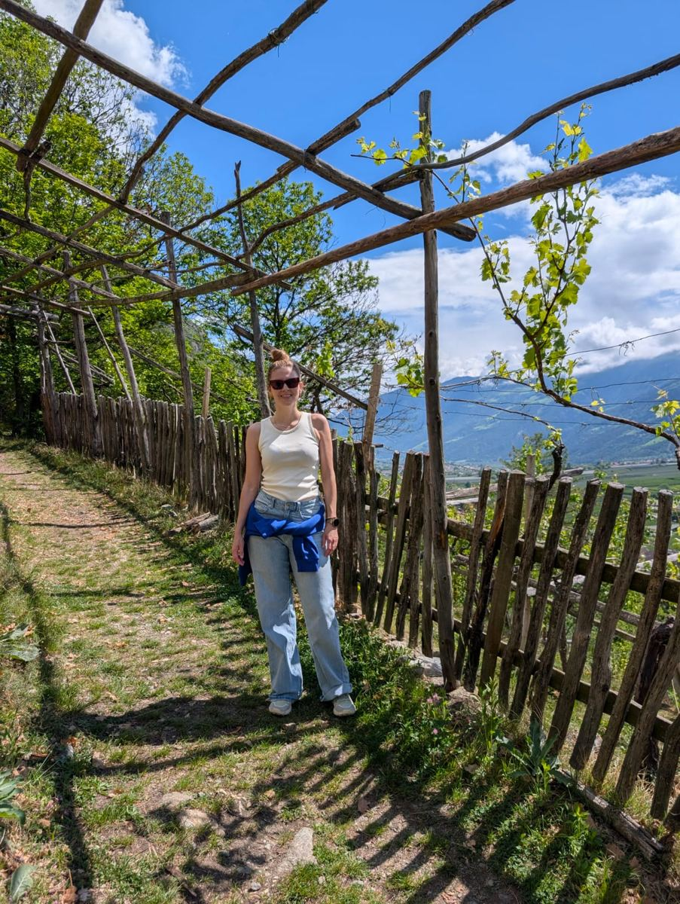
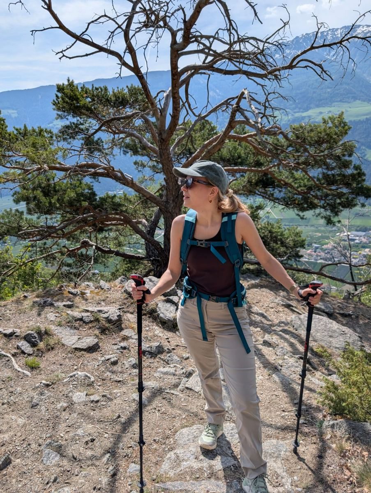
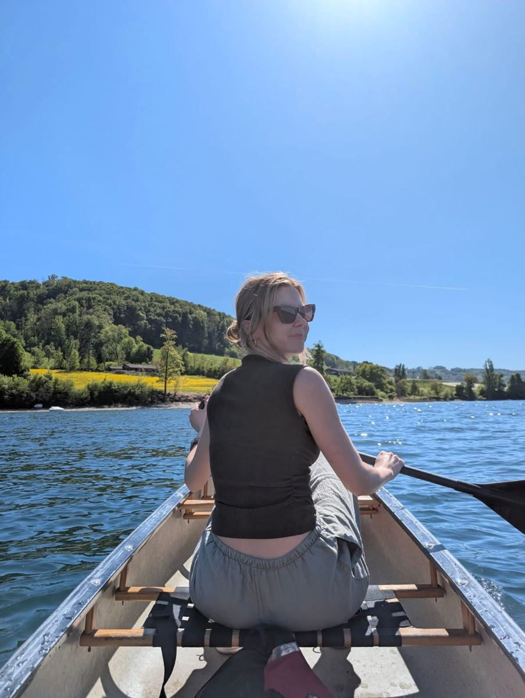
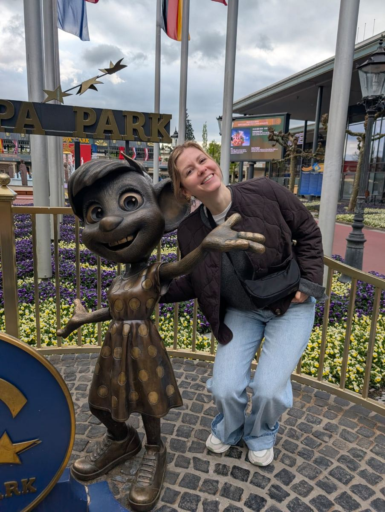
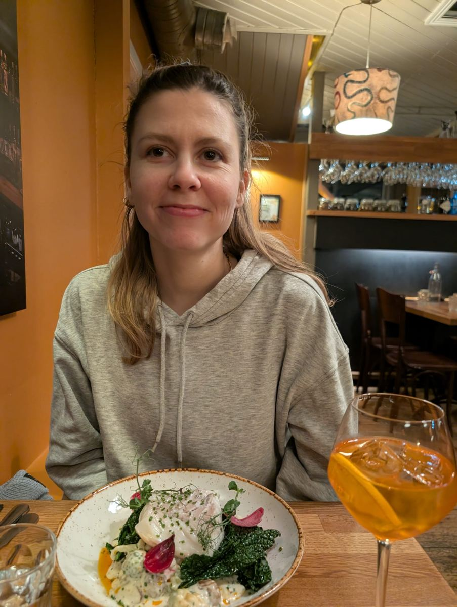
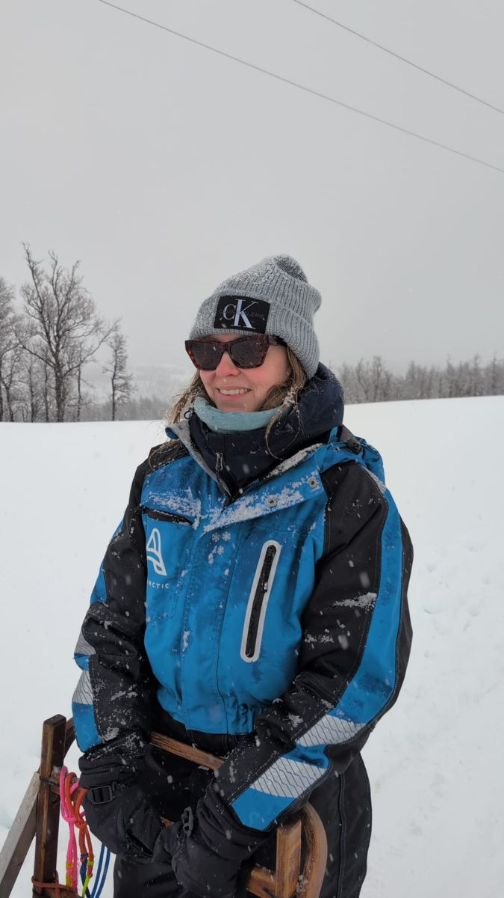
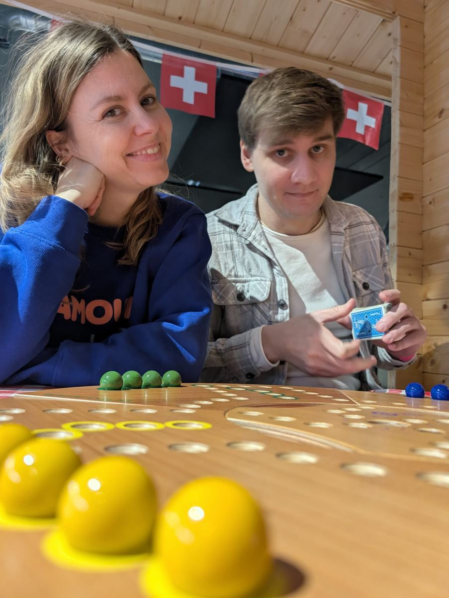
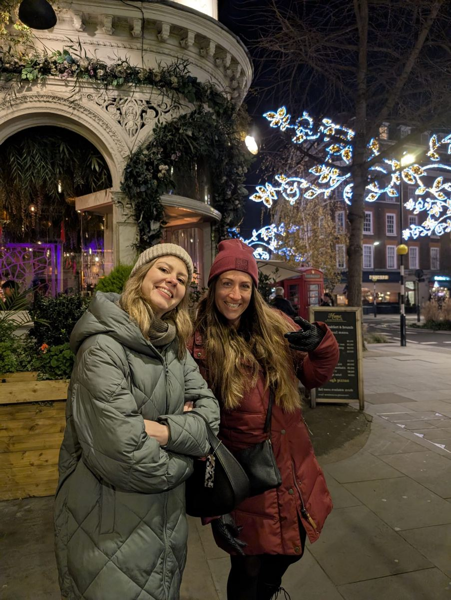
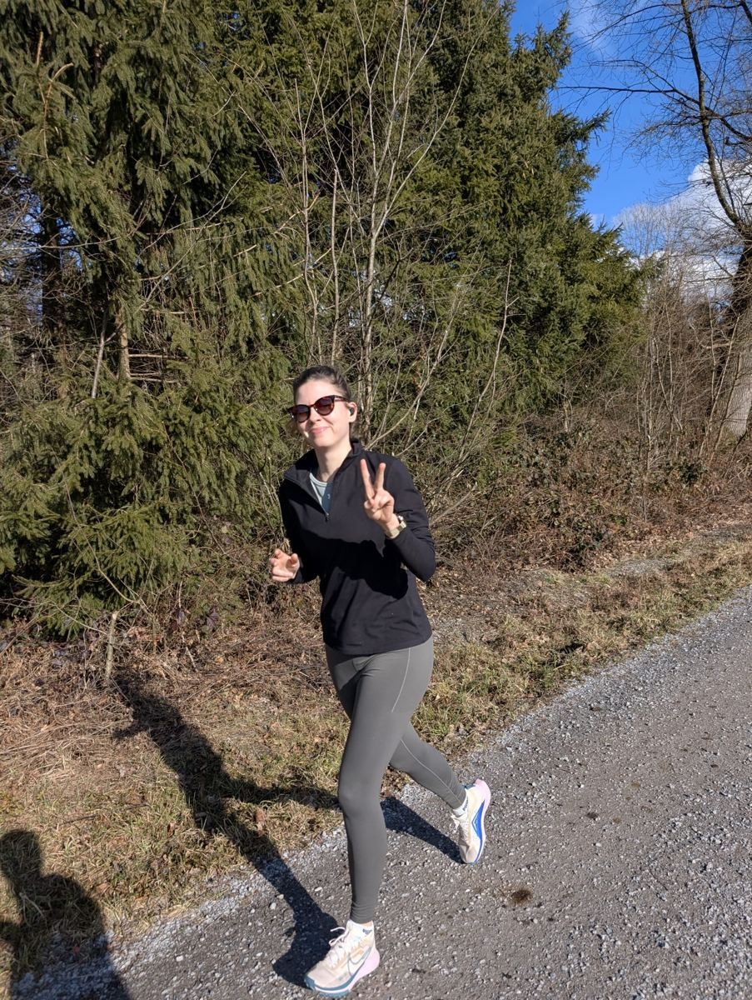

QR-Code scanne oder Button klicke — dört chasch Bild + Satz + Name poschte und alli anderä aluege.
Scan mit em Handy, oder:
Wand öffne & mitmacheBonus: Live-Diashow
Vo Südamerika über Tromsø bis London — es paar Bilder, wo zeige, firum die Frau eso vill Läbe hät.








